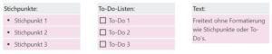
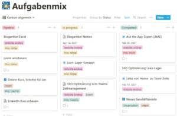
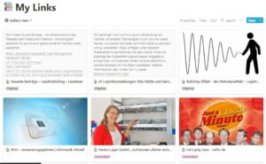

Notion – Nutzen und meine Meeting-Datenbank
Heute geht es um Notion! Am Anfang zeige ich dir ‚live‘ meine Meeting-Datenbank, welche du dir downloaden und gleich in dein Notion integrieren kannst. Danach werde ich darüber reden, was Notion eigentlich ist, wofür ich Notion benutze und was die Stärken und Schwächen sind.
Notion wird immer beliebter. Von 2019 bis 2020 konnte die App seine Nutzerzahl von 1 Million auf über 3 Millionen steigern. Innerhalb dieser Welle bin auch ich ein Notion-Fan geworden. Deshalb wird es Zeit, dieser App ebendiesen Blogartikel zu widmen.
Meine Meeting-Datenbank
Hier bekommst du meine Meeting-Datenbank.
Bei weiteren, individuellen Fragen zu Notion oder Excel, buche gerne hier einen Termin mit mir.
Was ist Notion?
Notion ist eine Notiz- und Organisations-App für Große. Denn es vereint bekannte Funktionen aus Trello, Evernote, OneNote, KanBo und Co. Hier drei Beispiele:
1. Notizen

Mit Notion sind die Standard-Notizfunktionen abgedeckt, welche du aus Evernote oder OneNote gewohnt bist: Stichpunkte, To-Do-Listen und Freitext. Diese lassen sich auch farblich formatieren und nebeneinander anordnen, wie auf der Abbildung zu sehen.
2. Kanban-Board
Reine Notizen sind noch lange kein Alleinstellungsmerkmal. Interessanter wird es, wenn ich diese z.B. in einem Kanban-Board integriere:

Das versetzt mich in die Lage, alle genannten Notiz-Funktionen und noch viele mehr direkt zur Aufgabe zu nutzen. Innerhalb der Aufgabe „Blogartikel Notion“ schreibe ich jetzt in diesem Moment an diesem Artikel.
3. Gemeinsames Arbeiten an Inhalten
Jeder mit vollem Zugriff auf das Kanban-Board kann sich den Entwurf meines Blockartikels darin durchlesen, kommentieren sowie editieren. Nachdem alle Bedenken und Anmerkungen meiner Kollegen aus der Welt geschaffen sein werden, kopiere ich den Text zu WordPress. Hier werde ich noch wenige SEO-Anpassungen vornehmen und den Artikel auf der Website veröffentlichen, auf der Sie sich momentan befinden.
Wofür benutze ich Notion?
Ich Nutze die App für privat wie beruflich.
Privat nutze ich Notion z.B. für:
- schnelle Notizen
- Lese-Liste
- Kalender
- Einkaufsliste
- Private-To-Dos
- Urlaubsplanung
- …
Zu lesende Fachliteratur findet sich in meiner Lese-Liste wieder. Wie beim Kanban-Board sehe ich darin, was ich noch nicht gelesen habe, was ich momentan lese und was abgeschlossen ist. Zusätzlich schreibe ich meine eigenen Zusammenfassungen der gelesenen Texte direkt in die Aufgabe.

Diese Liste könnte ich auch als Kanban-Board anzeigen lassen. Im Fall der Lese-Liste möchte ich aber, dass es ansprechender aussieht und mir direkt ein erster Eindruck vom Inhalt angezeigt wird. Mit zwei Klicks könnte ich mir diese Liste aber auch als Kanban-Board ausgeben lassen. Importiert wird neuer Inhalt auf der Liste entweder freihändig, oder mit einem Klick über ein Browser-Plugin.
Ein Beispiel aus meiner beruflichen Nutzung hast du am Anfang des Beitrags in Form meiner Meeting-Datenbank bereits gesehen.
Was sind die Stärken?
Notions größte Stärke ist seine Flexibilität. Jeden Inhalt auf einer Notion-Seite kann ich anordnen und darstellen wie es mir gefällt. Du hast oben bereits zwei Beispiele dafür gesehen. Doch das ist nur ein kleiner Teil der Spitze des Eisberges. Innerhalb einer Aufgabe eines Kanban-Boards kann wiederum ein Kanban-Board oder Kalender eingefügt werden. In einem einfachen Eintrag kann so ein ganz eigenes Projekt heranwachsen.
Zusätzlich ist Notion ein Programm, welches es mir ermöglicht, fast ausschließlich in einer einzigen App zu arbeiten. Natürlich habe ich noch ein separates E-Mail-Programm, ein Telefon, ein Online-Meeting-Tool und nutze Dropbox. Ohne Notion bräuchte ich dazu noch mindestens Evernote, Trello, Kalender und Microsoft Office (an Office komme ich auch mit Notion nicht ganz vorbei).
Es gibt noch viele weitere Stärken und Tipps. Auf diese werde ich in weiteren Blogartikeln eingehen.
Was sind die Schwächen?
Die größte Stärke Notions verursacht gleichzeitig seine größte Schwäche. Aufgrund der hohen Flexibilität ist der Einstieg in das Programm schwieriger als Trello. Bleibst du aber dran, schaust dir meine Artikel oder andere Quellen an, wirst du mit einem Programm belohnt, welches dir Vorteile gegenüber Konkurrenten und vor allem Spaß bei der Arbeit bringt.
Des Weiteren besitzt Notion keinen zufriedenstellenden Offline-Modus. Während ich bei Dropbox keinen Unterschied zwischen Off- und Online während der Arbeit erkenne, öffnet sich eine Notion Seite (Browser) gar nicht erst. Eine stabile Internetverbindung ist also eine Voraussetzung und das kann, zumindest in Deutschland, auf Bahnfahrten ein Problem werden.
Zuletzt möchte ich darauf hinweisen, dass es keinen Master-Kalender gibt. Das bedeutet, ich sehe Termine verschiedener Projekte nicht in einem einzigen Kalender. Es gibt zwar Tricks und Hilfsmittel dafür, aber keine Komplettlösung.
Weitere Artikel

Digitale Tools für Zusammenarbeit im Office
E-Mail, Digitale Ablage und eine Branchensoftware sind schon lange nicht mehr genug für effiziente Zusammenarbeit. Doch bevor Sie sich in einem Dschungel an digitalen Werkzeugen verlieren, sollten Sie sich über die Systematik …

Kollaboration im Office mit Kanbanize
Ein Tool, was mich für die digitale Kollaboration im Office begeistert ist Kanbanize. Dort kann man wirklich sehr fortgeschritten und smart zusammenarbeiten. Mit seinen verschiedenen Perspektiven auf den Flow im Office, der …